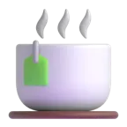
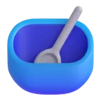

My English World
Book 4 · My Picture Dictionary
Unit 11
Breakfast
Tap any picture or sentence to listen.
🖼️ Look and say
pancakes
juice

tea
coffee
butter
honey

cereal
egg
waffle
croissant
▶ Play all words
💬 Words in sentences
I have pancakes with honey.
🔊
Can I have some orange juice, please?
🔊
I eat cereal with milk.
🔊
Mum cooks an egg for me.
🔊
▶ Play all sentences
‹ Vegetables
All units
Farm Animals ›